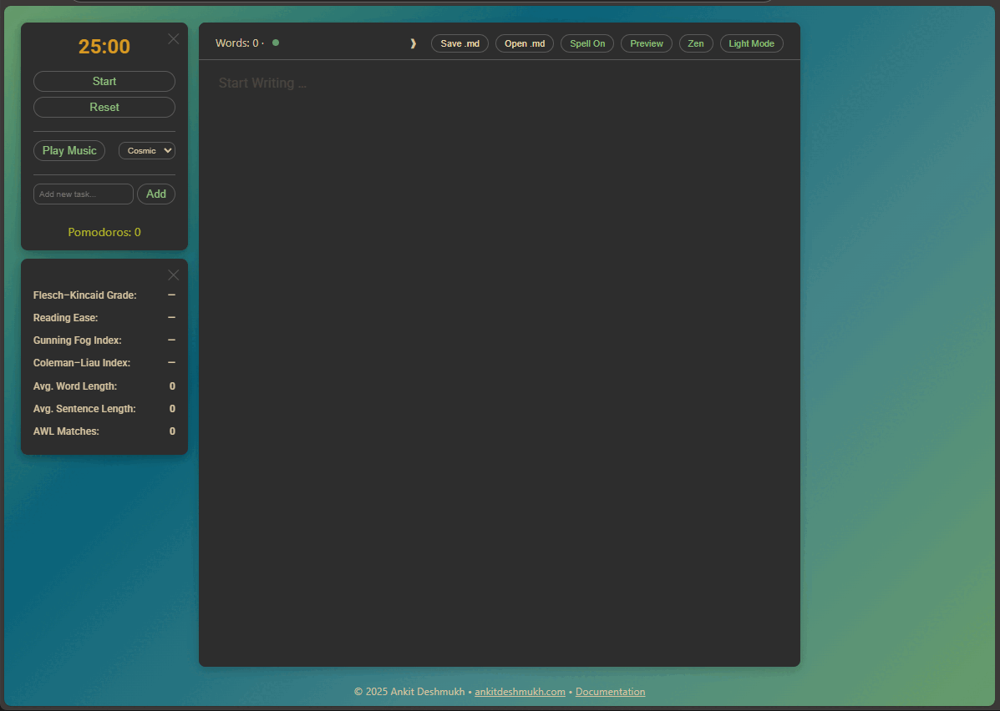

Application URL: https://ankitdeshmukh.com/projects/pomodorowriter/
Overview
Pomodoro Writer is a web‑based, distraction‑free writing environment that integrates:
- A Pomodoro timer with task management and ambient audio
- Real‑time writing analytics (readability scores, word count, academic word list)
- Markdown preview with Mermaid diagram rendering and export
- File operations (open/save
.mdfiles) - Zen Mode, theme switching, and spellcheck toggles

1. Core Features
1.1 Editor
- Powered by CodeMirror
- Dark mode theme:
gruvbox - Light mode theme:
default
- Dark mode theme:
- Full‑screen editing (F11)
- Markdown syntax highlighting
1.2 Pomodoro Timer & Tasks
- Timer – Default 25:00, controls: Start / Pause / Reset
- Audio tracks – Cosmic, Muse, Burble, Focus (unlock on first click)
- Task list – Add, toggle complete, delete (persists in
localStorage) - Pomodoro counter – Increments after each full interval
1.3 Writing Analytics
Displayed in top header and collapsible assessment panel:
| Metric | Description |
|---|---|
| Word count | Total words in editor |
| Flesch–Kincaid Grade | U.S. school grade level required |
| Reading Ease | 0–100 (higher = easier) |
| Gunning Fog Index | Complexity based on complex words |
| Coleman–Liau Index | Grade level from letters & sentences |
| Avg. Word Length | Characters per word |
| Avg. Sentence Length | Words per sentence |
| AWL Matches | Count of Academic Word List terms |
1.4 Markdown Preview
- Toggle Edit ↔ Preview (Ctrl+L)
- Renders with marked.js
- Math expressions via KaTeX (delimiters:
$…$,$$…$$,\(…\),\[…\])
1.5 Mermaid Diagrams
- Fenced code blocks with language
mermaidare automatically rendered in Preview mode. - Each rendered diagram provides two export buttons:
- Export SVG – downloads as
.svg - Export PNG – prompts for resolution scale (1–6) and downloads high‑resolution
.png(via html2canvas)
- Export SVG – downloads as
1.6 Theme & UI Toggles
- Theme – Dark Mode / Light Mode (affects CodeMirror theme and page background)
- Spellcheck – Enable/disable browser spellcheck (Ctrl+K)
- Zen Mode – Hides header, footer, timer, and assessment panel (Ctrl+Z)
1.7 File Operations
| Action | Shortcut | Description |
|---|---|---|
Save .md |
Ctrl+S | Uses File System Access API (Chromium browsers). Saves current editor content. |
Open .md |
Ctrl+O | Loads a Markdown file from local disk, replaces editor content. |
2. Usage Guide
2.1 First Access
- Open the application in a modern browser (Chrome, Edge, or Chromium‑based).
- Click or tap anywhere to unlock audio playback.
2.2 Writing & Markdown
- Write directly in the editor. Use standard Markdown syntax.
- For a Mermaid diagram, insert:
graph TD A[Start] --> B{Decision} B -->|Yes| C[Option 1]
2.3 Timer & Tasks
- Click Start – the countdown begins and selected background audio plays.
- At zero, an alert appears and the Pomodoro counter increments.
- Add tasks – type description → Enter or click Add.
- Manage tasks – use ✔ (complete), ↺ (reopen), ✕ (delete).
2.4 Preview & Diagram Export
- Click Preview (or Ctrl+L) to render Markdown, math, and Mermaid diagrams.
- Below each diagram, click Export SVG or Export PNG.
- For PNG, enter a scale (e.g.,
3for 3× resolution).
- Click Edit (or Ctrl+L) to return to the editor.
2.5 Saving / Opening Files
- Save – Ctrl+S → choose location and filename (default
document.md). - Open – Ctrl+O → select a
.mdfile → content loads into editor.
2.6 UI Adjustments
- Theme – Click Light Mode / Dark Mode button.
- Spellcheck – Click Spell On/Off or Ctrl+K.
- Zen Mode – Ctrl+Z to enter/exit. Press Esc or Ctrl+Z to exit.
- Minimize panels – Click the ✕ on the Pomodoro timer or Assessment panel, or press Ctrl+M.
3. Keyboard Shortcuts Reference
| Shortcut (Windows/Linux) | macOS | Action |
|---|---|---|
| F11 | F11 | Full‑screen editor (CodeMirror) |
| Esc | Esc | Exit full‑screen or Zen Mode |
| Ctrl+L | ⌘ + L | Toggle Editor / Preview |
| Ctrl+K | ⌘ + K | Toggle spellcheck |
| Ctrl+M | ⌘ + M | Minimize / restore Pomodoro & Assessment panels |
| Ctrl+S | ⌘ + S | Save Markdown file |
| Ctrl+O | ⌘ + O | Open Markdown file |
| Ctrl+Z | ⌘ + Z | Enter / exit Zen Mode |
4. Technical Notes
- File System Access API – Required for Save/Open operations. Fully supported in Chromium‑based browsers.
- Audio unlock – Browsers require a user interaction before audio can play. The app unlocks audio on the first click/touch anywhere.
- Persistence – Task list is stored in
localStorage(no backend). - Mermaid export – PNG export uses
html2canvas; scale values above 6 may cause performance issues. - Spellcheck – Relies on the browser’s native spellchecking; languages vary by browser settings.